British Columbia
Vancouver
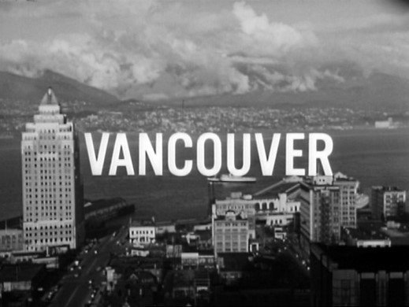
Quebec
Montreal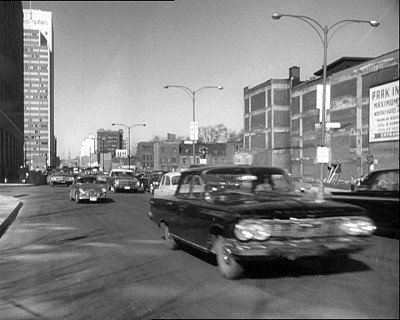
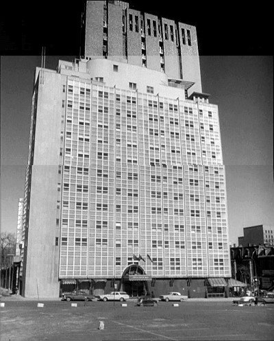
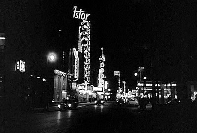
THE
SAINT: Judith
(Robert Lynn: 1963)
Establishing shot Montreal at night (including the Astor Restaurant,
688 Rue Sainte-Catherine West).
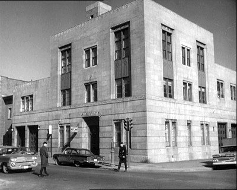
THE
SAINT: Judith (Robert
Lynn: 1963)
Simon Templar finds himself in trouble with the law whilst visiting
Montreal and ends up in this police station (Police and Fire
Station, 1445 Rue Saint-Mathieu).
(Identified by Garry Ng,
June 2018)
Montreal Docks
THE
AVENGERS: Mission to
Montreal (Don Leaver: May 1962)
After a six day passage the M.V. Calpurnia arrives at Montreal Docks.
THE
PRISONER: The Girl Who
Was Death (David Tomblin: November 1967)
45°31'31.47"N, 73°32'5.19"W
The secret agent visits a fairground. Establishing shots of fairground
and shots of various rides.
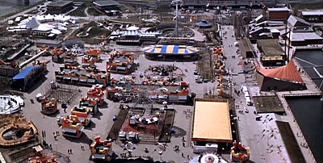
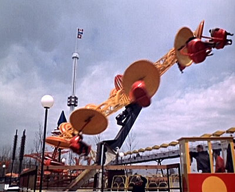
Ontario
Toronto
The Park Plaza Hotel, 4 Avenue Road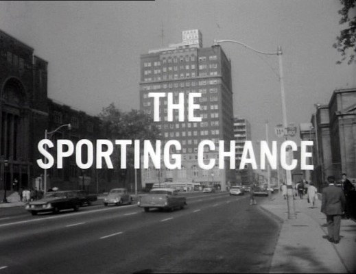
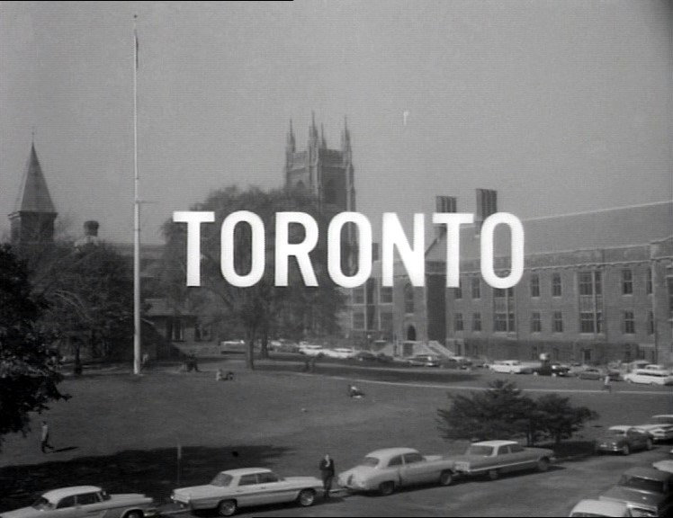
THE
NEW AVENGERS: Gladiators
(Don Thompson: 1977)
The Russian agents hire this secluded mansion for their secret training
headquarters.
(Identified by Garry Ng)
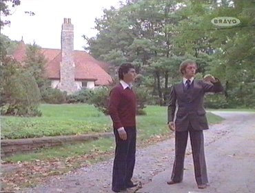
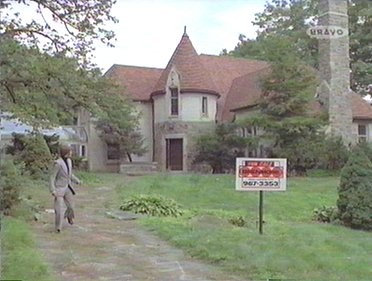
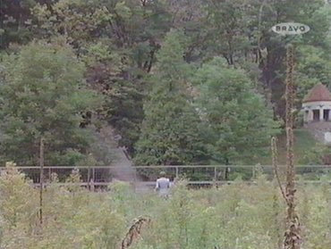
THE
NEW AVENGERS: Gladiators
(Don
Thompson: 1977)
The two Canadian agents watch as the Russians agents pack and leave the
RussianConsularBuilding.
(Identified by
Hans Boldt)
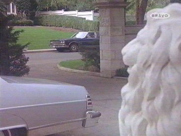
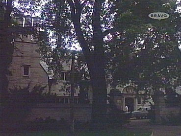
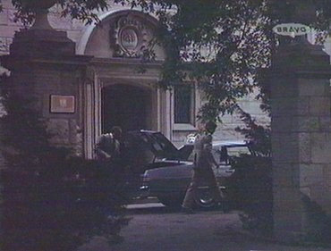
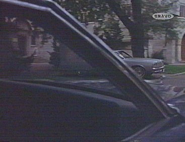
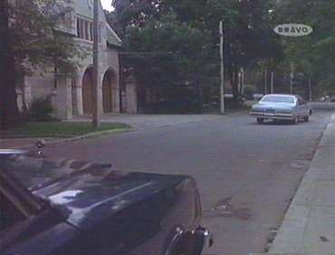
THE
NEW AVENGERS: Gladiators
(Don Thompson: 1977)
Purdey (Joanna Lumley) and Gambit (Gareth Hunt) stop the TR7 when they
lose the Russian agents they are following but Gambit spots a face he
knows (Bill Star) in a passing car.
THE
NEW AVENGERS: Gladiators
(Don Thompson: 1977)
There is a fight outside a convenience store/post office with posters
for "Markham Fair" on display.
(Identified by
Hans Boldt)
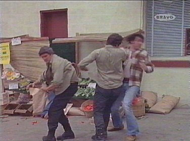
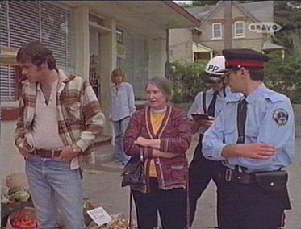
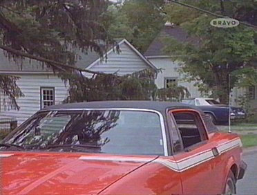
Gambit and Purdey are looking for the Russian agents and
decide to
follow a passing police car on the off-chance.
(Identified by
Hans Boldt: "The first photo (with the motorcycle) looks
north, where Meadowvale turns right past the underpass onto Plug Hat
Road.")
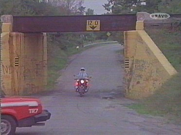
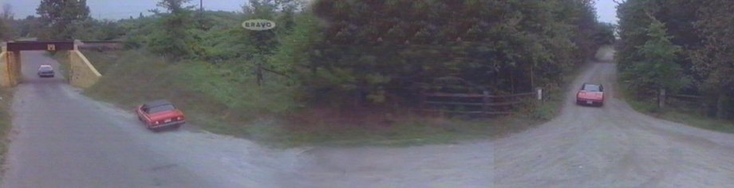
Identified by Hans Boldt: "The first photo (with the motorcycle) looks north, where Meadowvale turns right past the underpass onto Plug Hat Road."
Sewells Road, North of Old Finch AvenueTHE
NEW AVENGERS: Gladiators
(Don Thompson: 1977)
The Russian agents drive into their rented rural training headquarters.
(Identified by Hans Boldt)
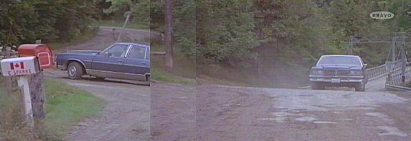
THE
NEW AVENGERS: Gladiators (Don Thompson: 1977)
Purdey and Gambit arrive to find the car containing the bodies of two
Canadian agents dumped by a river.
(Identified by Hans Boldt)
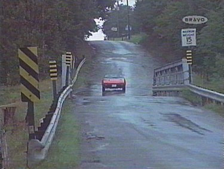
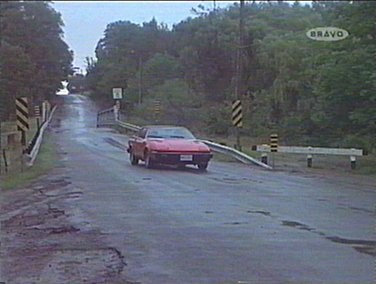
THE
NEW AVENGERS: Gladiators
(Don Thompson: 1977)
Steed is races from the Canadian Intelligence Headquarters to meet up
with Gambit and Purdey
(Identifeid by Blaine
from Albany)
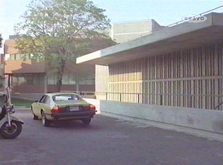
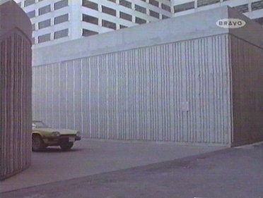
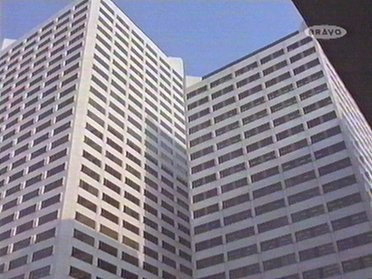
THE
NEW AVENGERS: Gladiators
(Don Thompson: 1977)
Racing to meet up with Gambit and Purdey, Steed joins the expressway.
(Identified by Hans Boldt)
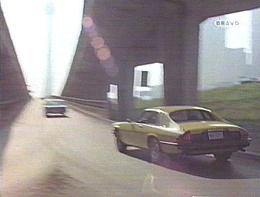
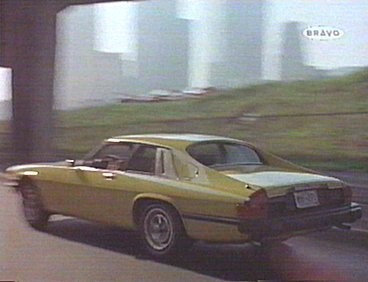
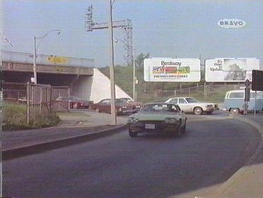
THE
NEW AVENGERS: Gladiators
(Don Thompson: 1977)
Gambit chases after car filled with Russian assassins. He drives down
from the countryside towards the city.
(Identified by Hans Boldt)
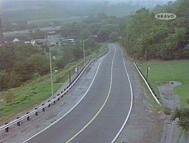
THE
NEW AVENGERS: Gladiators
(Don Thompson: 1977)
Gambit chases after car filled with Russian assassins into the city.
(
Identified by Hans Boldt)
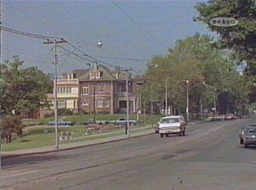
THE
NEW AVENGERS: Gladiators
(Don
Thompson: 1977)
Gambit still chasing after the car filled with Russian assassins.
(Identified by Craig
Norris)
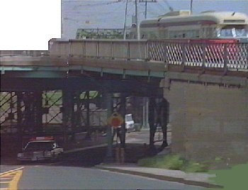
"Identified by Craig Norris:"A bit hard to explain, but the police car is coming off the Bayview Extension using an on/off access road heading towards River Street. It comes up between where King St. E. (streetcar) ends and merges with Queen St. East"
Front Street EastTHE
NEW AVENGERS: Gladiators
(Don
Thompson: 1977)
Gambit continues the chase further into the city (notice the Gooderham
Building a.k.a. "FlatIronBuilding" on the corner of Church Street).
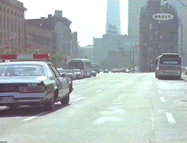
Queen StreetTHE
NEW AVENGERS: Gladiators
(Don
Thompson: 1977)
The chase continues…
(Identified by Craig
Norris)
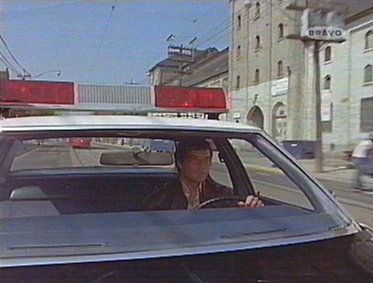
Gambit is travelling eastbound on Queen Street East towards River Street
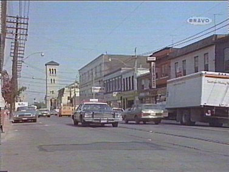
Gambit is travelling westbound on Queen Street East at Berkeley Street
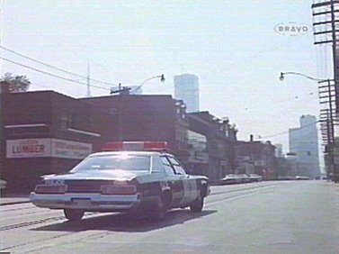
Gambit has just past Berkeley Street
Identified by Craig Norris: "...In the following three photos, Gambit is travelling west along Queen St. In the shot showing a Lumber store, I happen to know this is on the south side of Queen at Berkeley St." additional information from Garry Ng.
Yonge Street and Orchard View BoulevardTHE
NEW AVENGERS: Gladiators
(Don
Thompson: 1977)
The chase continues…
(Identified by Garry Ng)
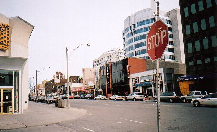
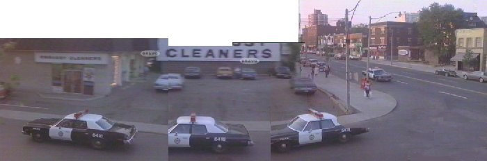
THE
NEW AVENGERS: Forward
Base (Don Thompson: September 1977)
The Airport where message about FB1 is received.
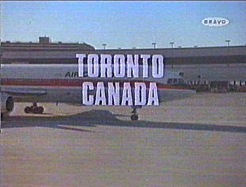
THE
NEW AVENGERS: Forward
Base (Don Thompson: September 1977)
Shopping complex where Steed (Patrick Macnee) meets Bailey (August
Schellenberg)
(Identified by Hans Boldt)
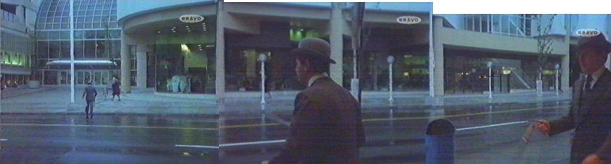
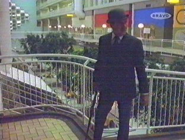
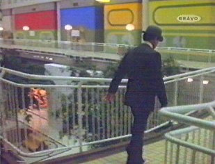
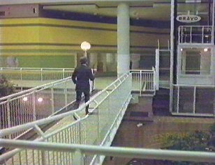
PARTLY KNOWN –Toronto Islands - CentreIsland and Ward's Island
THE
NEW AVENGERS: Forward
Base (Don Thompson: September 27th, 1977)
Purdey (Joanna Lumley) and Gambit (Gareth Hunt) watch from a bridge as
Halfhide (David Calderisi) passes beneath the in a swan.
(Toronto Islands - Centre Island and Ward's Island see much of the action for this episode. - Detail that is more precise would be appreciated from those who know the area. The swan boats were from the Central Island amusement park.)
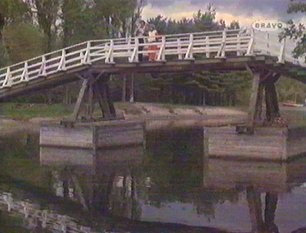
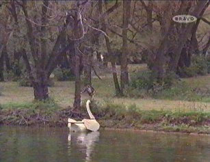
Ashbridges Bay ParkTHE
NEW AVENGERS: Forward
Base (Don Thompson: September 1977)
Gambit (Gareth Hunt) takes Steed (Patrick Macnee) to where Purdey
(Joanna Lumley) is looking for the Mark 6 guidance unit in the lake.
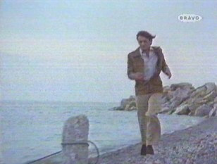
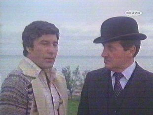
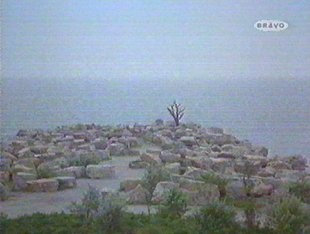
THE
NEW AVENGERS: Forward
Base (Don Thompson: September 1977)
Steed (Patrick Macnee) visits Harper's Trading Post looking for
postcards.
(Identified by Garry Ng)
Photo: Garry Ng
Wolfe’s grocery store, 143
Amelia Steet (closed)
THE
NEW AVENGERS: Forward
Base (Don Thompson: September 1977)
Harper (Les Rubie) is
attacked by a Russian agent just before Steed (Patrick Macnee) enters
Harper's Trading Post looking for postcards. Later, Steed returns
looking for fishing tackle.
(Identified by Garry Ng, June 2022)
THE
NEW AVENGERS: Forward
Base (Don Thompson: September 1977)
Halfhide's Motel - After Gambit (Gareth Hunt) and Purdey (Joanna
Lumley) scare Halfhide (David Calderisi) into contacting Forward Base,
Tarkar is sent to assassinate Halfhide (Christie Brown & Co.
2150 Lakeshore Blvd West, can be seen in the background although the
motel has been redeveloped).
(Identified by Sylvana
Grisonich-Boldt)
THE
NEW AVENGERS: Forward
Base (Don Thompson: September 1977)
Purdey follows Halfhide to thelakeshore (from Lakeshore Boulevard West).
(Identified by Garry Ng)
Photo: Garry Ng
THE
NEW AVENGERS: Complex
(Richard Gilbert: August 1977)
Establishing shot of C.N.Tower
The C.N.Tower
THE
NEW AVENGERS: Complex (Richard
Gilbert: August 1977)
A Canadian agent Greenwood (David Nichols) takes a series
of photographs of agent X41, Scapina.
Pearson International Airport, Malton
THE
NEW AVENGERS: Complex
(Richard Gilbert: August 1977)
Greenwood (David Nichols) sees the suitcase safely on it's way from the
airport. Purdey (Joanna Lumley), Steed (Patrick Macnee) and Mike
(Gareth Hunt) arrive from London.
(Identified by Hans Boldt)
THE
NEW AVENGERS: Complex
(Richard Gilbert: August 1977)
Purdey (Joanna Lumley), Steed (Patrick Macnee) and Mike (Gareth Hunt)
wait by the Kentish border for a plane carrying news of Scapina. As the
expected parachutist lands they are ambushed by a hidden figure with a
machine gun.
THE
NEW AVENGERS: Complex
(Richard Gilbert: August 1977)
Purdey (Joanna Lumley), Steed (Patrick Macnee) and Mike
(Gareth Hunt) arrive at the top secret Canadian Intelligence Building.
After finding it
difficult to get in they later find it even harder to get out!
(Identified by Hans Boldt)
THE
NEW AVENGERS: Complex
(Richard
Gilbert: August 1977)
Purdey (Joanna Lumley), Steed (Patrick Macnee) and Mike (Gareth Hunt)
arrange to meet Russian agent Karavitch (Vlasta Vrana) "Pickin' Chicken
Bar-B-Q" (demolished), but he is shot from a passing Toronto Star van.
(Identified by Hans Boldt)
THE
NEW AVENGERS: Complex
(Richard
Gilbert: 1977)
Gambit drives after the assassin, who is driving a "Toronto Star" van
past a photography shop.
(Identified by Craig Norris: "Laird Ave. at Vanderhoof. But the
photography shop is no
longer there.")
THE
NEW AVENGERS: Complex
(Richard
Gilbert: August 1977)
Gambit follows the "Toronto Star" van by a railway track towards a
freeway overpass. But before we get to the overpass they turns left.
Identified by Craig Norris: " this is at the base of the Bayview
Extension heading north passing under the King St / Queen St merge (not
a freeway) which is where that access road is located."
THE
NEW AVENGERS: Complex
(Richard
Gilbert: August 1977)
Identified by Garry Ng:
“This scene is a little tricky. After the "Laird Avenue" scene, it
jumps across town to the Bayview Extension. The three pictures show the
cars driving north on Bayview Avenue and turning left onto Eastern
Avenue. A little explanation is required. The truss bridge you see is
the old abandoned Eastern Avenue bridge, which used to connect Eastern
Avenue across the Don River. The highway overpass you see is actually
the Eastern Avenue Diversion built to connect the Don Valley Parkway to
Eastern Avenue. It is not a highway. The original Eastern was never
abandoned though. And for some reason, Eastern was gated off just west
of Bayview leaving a little 20-foot separate stub. That stub is the
part you see Gambit turning left onto. The "King Street/Queen Street"
is actually a little further up Bayview.”
THE
NEW AVENGERS: Complex
(Richard
Gilbert: August 1977)
Gambit is then seen chasing the van onto a street from a side-road on
the right and then around a sharp bend heading up and over a bridge of
some sort.
(Identified by Garry
Ng:“The
Star truck is turning from southbound Cypress St east onto Front St
East. Keep note of the building on the left. The second picture has the
truck swerving the corner into Bayview Avenue now heading north.”)
Cypress Street
THE
NEW AVENGERS: Complex
(Richard
Gilbert: August 1977)
Suddenly Gambit is chasing the van towards this building.
(Identified
by Garry Ng:“The first picture has Gambit heading south on Cypress St.
Remember the building before? That's the building at the end of the
street. The composite picture is Gambit turning from westbound Eastern
Avenue south onto Cypress. Note: the big building at the end of the
street is demolished and so is the building on the left. The big
Toshiba sign remains, except on a very tall pedestal.”)
Photo: Garry Ng
THE
NEW AVENGERS: Complex
(Richard
Gilbert: August 1977)
Gambit follows the "Toronto Star" van across this crossroads.
(Identified by Garry Ng)
Identified by Garry Ng
Photos: Garry Ng
THE
NEW AVENGERS: Complex
(Richard
Gilbert: August 1977)
Gambit follows the "Toronto Star" van down to a freeway intersection.
(Identified by Hans Boldt)
THE
NEW AVENGERS: Complex
(Richard
Gilbert: 1977)
Suddenly Gambit is atop the Lawrence Ave. East bridge/Bayview underpass
having lost the Van. He gets out and scans the University campus gates
and the van appears below him heading south. He does a U-turn and
chases after it.
(Identified by Craig.Norris)
THE
NEW AVENGERS: Complex
(Richard
Gilbert: August 1977)
Gambit is in hot pursuit trough a tree-lined street when suddenly (as
he travels down Park Lane Circle), he and the van collide.
THE
NEW AVENGERS: Complex
(Richard
Gilbert: August 1977)
Later Gambit follows a
Russian official to the home of architect Berisford Holt (172 Bridle
Path)
(Identified by Brian,
Toronto, additional information from Hans Boldt)
University Avenue, near Armoury Street
THE
NEW AVENGERS: Complex
(Richard Gilbert: August 1977)
Gambit is arrested and driven to jail.
University Avenue, near
Armoury Street looking south from a spot directly opposite the Complex
building.
(Identified by Karenza and Craig.Norris)
THE
NEW AVENGERS: Complex
(Richard
Gilbert: August 1977)
Gambit waits outside the Russian Consulate building.
(Identified by Hans Boldt)
The Bridle Path (Park Lane Circle)
THE
NEW AVENGERS: Complex (Richard
Gilbert:
August 1977)
Gambit follows a Russian official when he leaves the consul building.
They drive down this road…
(Identified by Garry Ng,
April, 2008)
THE
NEW AVENGERS: Complex
(Richard Gilbert: August 1977)
Then turn left at this junction onto a bridge heading straight for the
C.N.Tower.
(Identified by Hans Boldt)
THE
NEW AVENGERS: Complex
(Richard
Gilbert: August 1977)
Steed leaves his private viewing of the architecture exhibition with
the idea that Prurdey may be in danger.
(Identified by Karenza and Craig Norris)
THE
NEW AVENGERS: Complex
(Richard
Gilbert: August 1977)
Steed races along this street in order to rescue Purdey
(Identified by Hans Boldt)
CNE (Canadian National Exhibition)
THE NEW AVENGERS: Emily (Don Thompson: 1977)
"The next scene in the chase jumps to downtown at the Royal
Bank Plaza (Bay St & Wellington St). She runs down some stairs
down to the mall level of the RoyalBank Plaza. She then is seen running
outside around the RoyalBankPlaza. After that, I don't know where the
scenes are.”
(Identified by Garry Ng,
April, 2008)
THE
NEW AVENGERS: Emily
(Don Thompson: 1977)
They then end up a few kilometres to the west where they drive
eastbound along Lakeshore Boulevard West back to Humber Bay Park in
Mimico! This is where the Fox makes the ski-pickup.
(Identified by Garry Ng,
April, 2008)
Photo: Dan
Dell'Unto
THE
NEW AVENGERS: Emily
(Don Thompson: 1977)
Steed, Gambit and Purdey go to
give the sad news about Emily to Miss Daly (Jane Mallet).